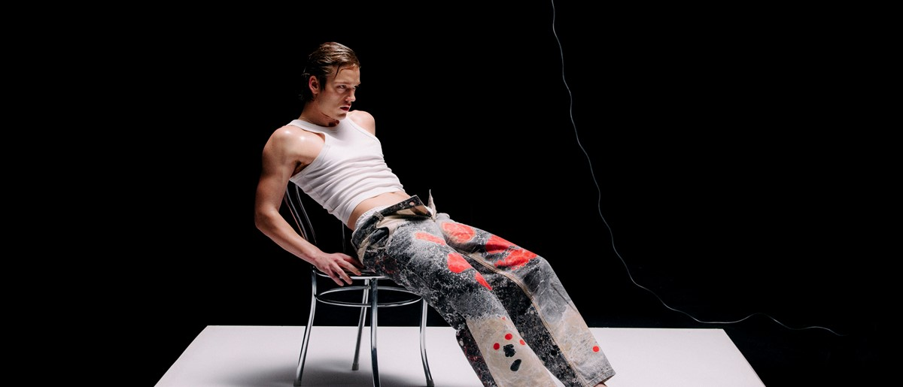
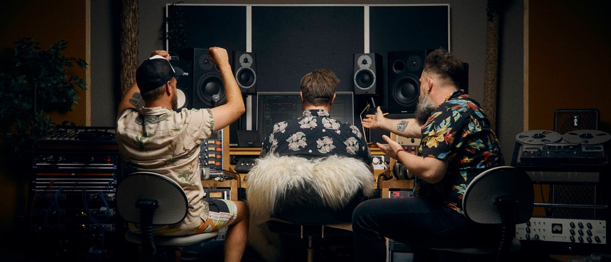
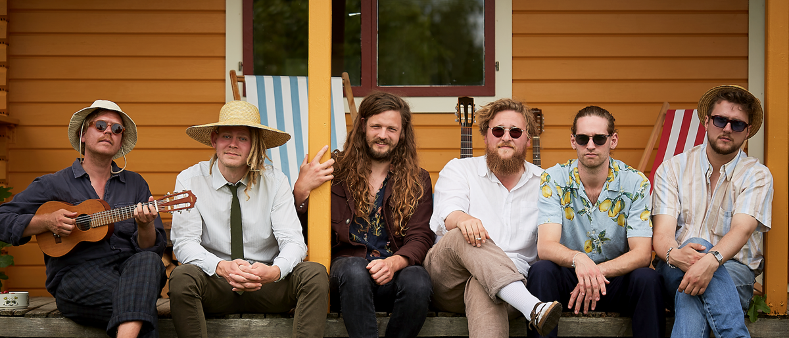
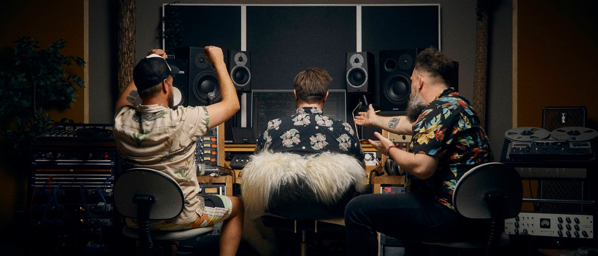
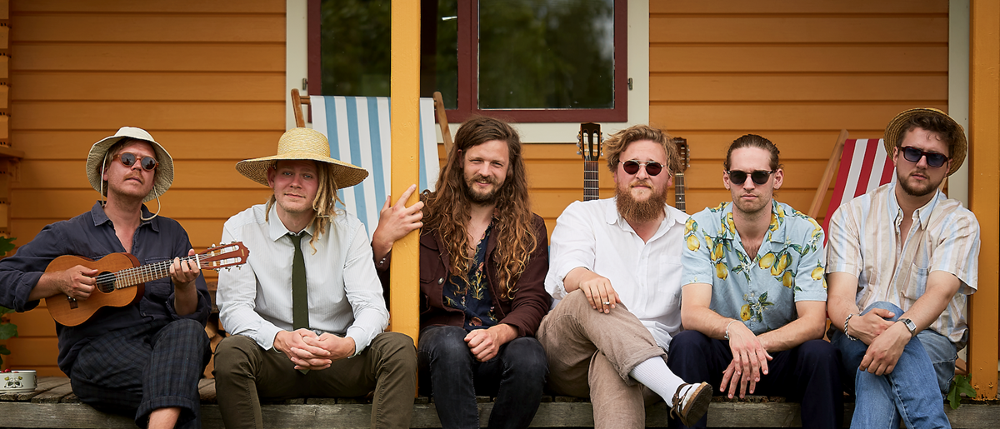
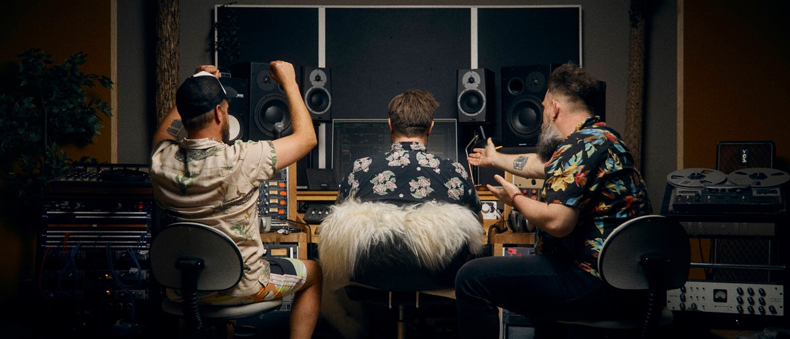
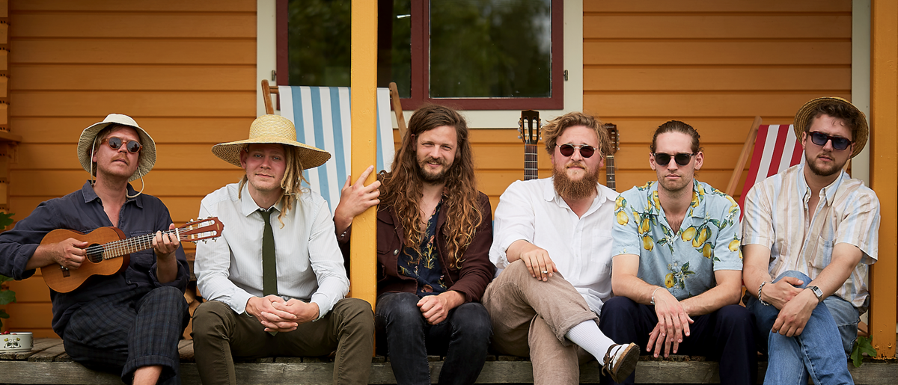

Velkommen til Radar

 





Radar er en platform for nye musikalske talenter og for dig; et sted hvor du kan finde dit nye ynglings band eller artist. Radars mission er at skinne et lys på de kunstnere som har talentet men ikke navnet endnu. Tag med os på en musikalsk rejse for at opdage noget nyt og spændende!